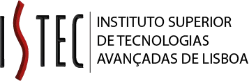
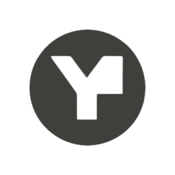
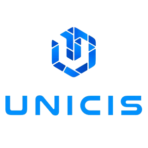
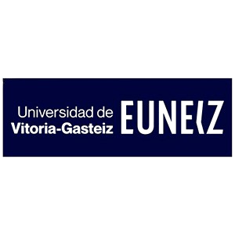
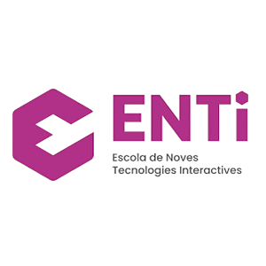
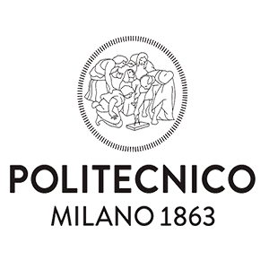
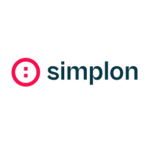
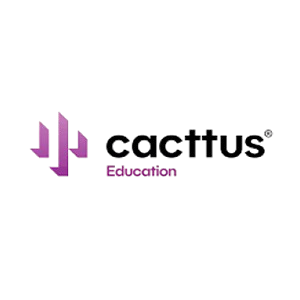

VIC is an EU-backed initiative tackling the advanced digital skills gap by focusing on Extended Reality (XR)—including Augmented and Virtual Reality. The project brings together universities, research institutions, VET providers, and industry leaders to deliver cutting-edge training in immersive technologies.

Consortium Coordinator

Consortium Partners
|  |  | |
|  |  | |
|  |  | |
|  |